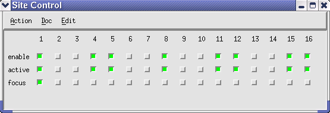
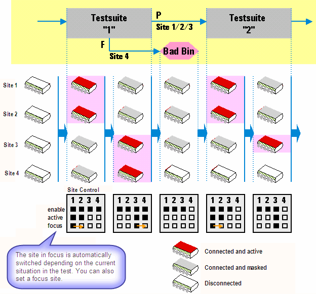

The states of the sites
The Site Control window shows the states of the individual site. Sites unavailable due to defect pin configuration, cannot be enabled, activated or receive result focus. You can only set the states for available sites.

Enable
- If the site is enabled, it is connected any time the connect sequence is run.
- If the site is disabled, the disconnect sequence is executed and the site remains in the disconnected state irrespective of the states of the other sites.
- An enabled, but not active site is considered to be inserted to bypass.
- A disabled site is considered to be not inserted.
Disable a site when you insert or remove a DUT. This ensures minimum interference with other sites and minimizes the chances of killing the device.
Active
- If the site is activated, the testflow is executed for the site, and that any errors generated by the site during the testflow are processed.
- If the site is not activated, the receivers for the site are masked and no result information is available for that site.
The active site is considered to be inserted to test. Activating a site automatically sets the enable check box.
Focus
For the site in query focus, results are displayed in the testflow editor and result tools. Also, any firmware queries report setup and results for the site currently in focus.
Only one site can be in focus. After the pin configuration has been loaded, the first site with no channels listed in the MCDIgnore file (see MCDIgnore file in Service Guide Part 1) gets the focus.
Focusing a site automatically sets the enable and active check boxes.
You can restrict execution of a test suite to the site which has currently the query focus. To do so, right-click the test suite icon in the testflow editor and select Execute site in focus. Then the following will happen:
- All active sites except the one in focus are inactivated (masked).
- The test suite is executed for only the site in focus.
- All sites that were masked in step 1 are reactivated.
As long as you are only interested in a global Pass/Fail result, you can ignore these details. But if you need cycle results from the Error Map, it is important to be aware of step 3, because reactivation of a site resets the Error Map data for all sites. Therefore, step 3 will delete the Error Map data that were just generated for the site in focus.
If you want to view these data, you must first inactivate all sites except for the site in focus. Then the site in focus will be the only site that is active when Execute site in focus is issued. Consequently step 3 will be omitted, and thus the Error Map data of the site specific test suite execution will be available.
Example
The menu items of the Site Control window Action > Enable all and activate all only affect those sites which are available. The figure below shows an example, where the sites 2, 3, 6, 7, 9, 10, 13 and 14 are not available.

The following figure shows the indication behavior of the check boxes in the Site Control window during a semi-parallel test.

Functional changes
- Introduced before SmarTest 6.3.2